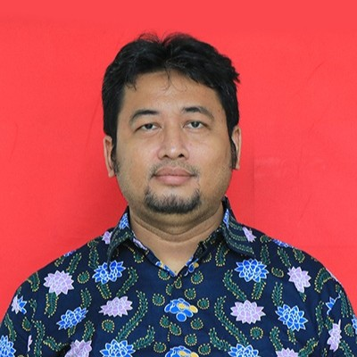
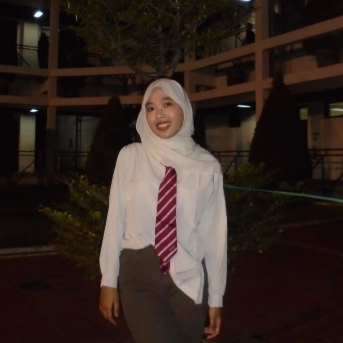
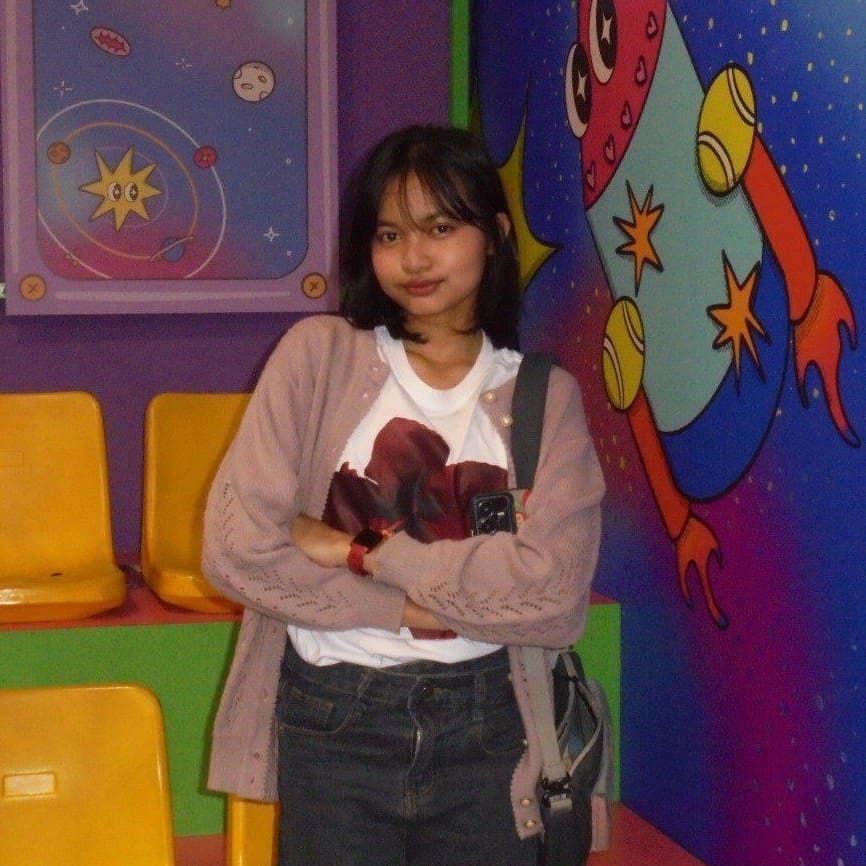
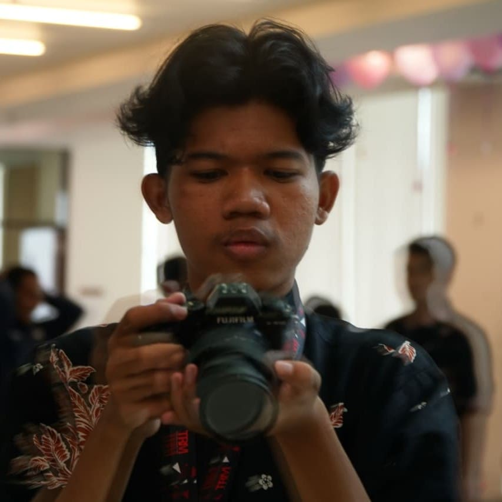
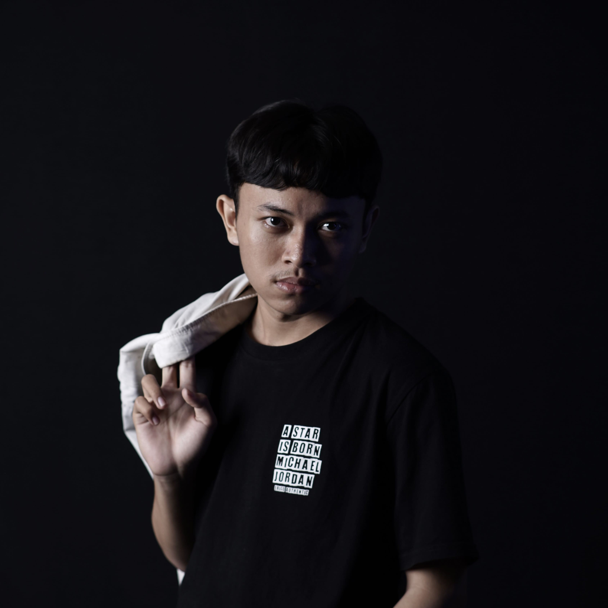
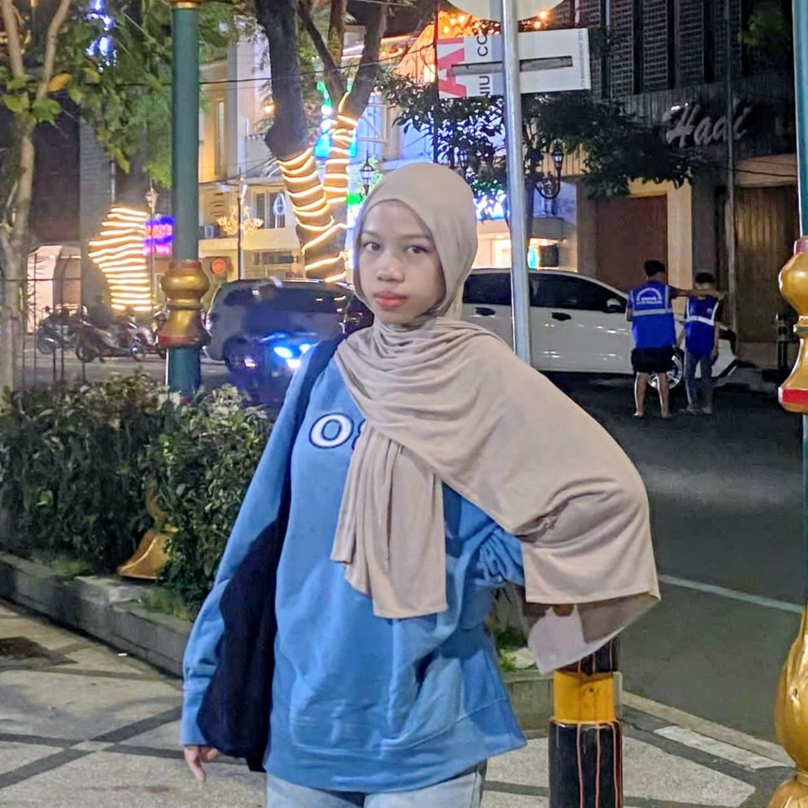
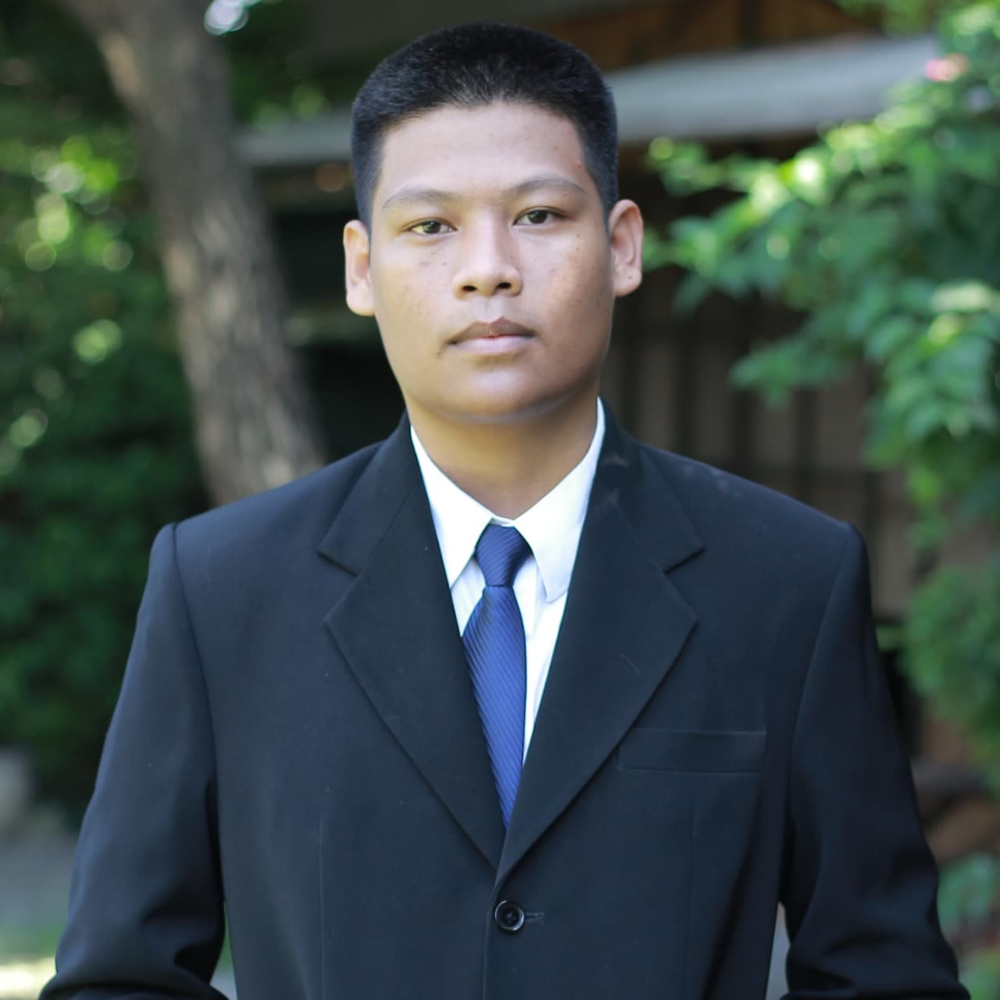

About Product
Menciptakan pengalaman belajar yang aktif, interaktif, dan imersif melalui gamifikasi dan Augmented Reality (AR) untuk menarik minat anak. Sekaligus, kami mengimplementasikan Tutor Mengaji Virtual berbasis AI (Web Speech API) yang berfungsi sebagai "telinga" pendamping, yang mampu memberikan koreksi dan validasi real-time terhadap bacaan mereka.
Dengan menggunakan teknologi AR, Hijaiyah Verse mengubah cara tradisional belajar menjadi lebih menarik dan mudah diakses oleh siapa saja, terutama bagi anak-anak yang sedang belajar Al-Qur'an dan bahasa Arab.
Project Mentor

Bapak Dhoto
Dosen Pengampu
Nama: Sritrusta Sukaridhoto, S.T., Ph.D.
Sebagai dosen pengampu dari mata kuliah Workshop AR/VR
Asisten Mentor

Mas Faris
Asisten Dosen Pengampu
Nama: Faris Saifullah
Sebagai asisten dosen dari mata kuliah Workshop AR/VR
Developer Team

Elsa
Project Manager
Nama: Elsa Hayuningrat
NRP: 5324600018
Jobdesk: Memimpin tim bertanggung jawab dalam perencanaan dan pengawasan project secara keseluruhan, menjaga agar project tetap berjalan.

Aluna
Creative
Nama: Mezzaluna Anandita Z
NRP: 5324600002
Merancang desain antarmuka pengguna yang intuitif dan menarik untuk memastikan pengalaman pengguna yang optimal dan memudahkan interaksi dengan aplikasi.

Irsyad
Programmer
Nama: Muhammad Irsyad N
NRP: 5324600007
Pengembang aplikasi yang bertanggung jawab untuk menulis kode, mengintegrasikan fitur-fitur AR, dan memastikan aplikasi berjalan dengan lancar.

Fendo
Programmer
Nama: Alfendo Putra
NRP: 5324600015
Pengembang aplikasi yang bertanggung jawab untuk menulis kode, mengintegrasikan fitur-fitur AR, dan memastikan aplikasi berjalan dengan lancar di berbagai perangkat.

Rena
Creative
Nama: Maurena Isaura A
NRP: 5324600022
Merancang desain antarmuka pengguna yang intuitif dan menarik untuk memastikan pengalaman pengguna yang optimal dan memudahkan interaksi dengan aplikasi.

Rivan
Creative
Nama: Muhammad Rivanza R
NRP: 5324600025
Merancang desain antarmuka pengguna yang intuitif dan menarik untuk memastikan pengalaman pengguna yang optimal dan memudahkan interaksi dengan aplikasi.